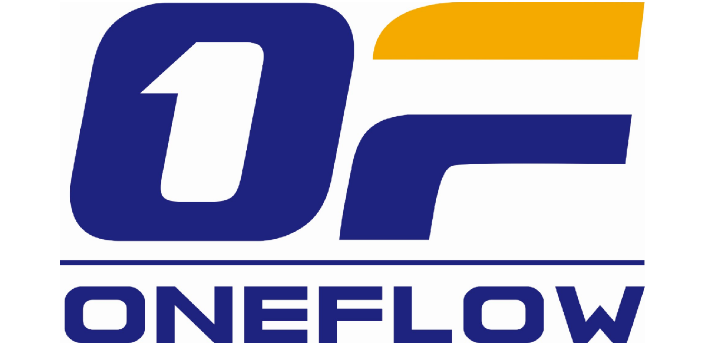

About Me
Hi There 👋 I'm Zhuobin Huang (黄卓彬)，I am a second-year Master student from University of Electronic Science and Technology of China (UESTC). I had obtained my B.E. from UESTC in 2021, majored in network engineering. I'm enjoying building systems for datacenter infrastructure, currently I am conducting following research projects:
- Design and implementation of distributed training system for large-scale graph neural network (GNN);
- Accelerate distrbuted machine learning via programmable dataplane (e.g. P4 Swicth);
Please refer to my CV and this website for more details about my work.
Projects |
Industry

OneFlow
CUDA Engineer
Framework Development Group
-
Developed several operators and corresponding underlying kernels for the framework, including fused Glu and adative SpMV, etc. Besides, profiled these developed kernels using NVIDIA
nsysandncutools.
Huawei
Nov. 2021 ~ July. 2022
University-Enterprise Cooperation Project
Chengdu Research Institute
- Graduate from 2021-2022 UESTC-Huawei University-Enterprise Cooperation Zhiyuan Class (致远班);
- Got an offer from Huawei "Brave Star" internship program in 2020, yet miss this internship due to the COVID-19 outbreaking in the spring and summer of 2020.
Hisilicon
Mar. 2022 ~ Aug. 2022
Campus Ambassador
National Embedded Chip and System Design Competition
- 2022 HiSilicon Campus Ambassador in UESTC: Organized about 20 teams to participate in the 2022 National Embedded Chip and System Design Competition (NECSDC), responsible for tracking design of works, problem solving and problem feedback, etc.;
- NECSDC: Lead the team to won the National First Prize.
Byte Dance
Mar. 2021 ~ Sept. 2021
Network Virtualization R&D Engineer
Production and Research Architecture Department
- Optimization of OvS-DPDK：Participated in the reconstruction and optimization of OvS-DPDK, the infrastructure used by the internal IDC for virtual switching network, improving the bottleneck performance of the dataplane to meet the needs of internal services;
- Development of Open Stack control plane Components：Developed and maintained the software framework for the control plane of the virtual network to ensure the atomicity of control transactions;
- Online database operation and maintenance：Responsible for stability assurance of some online database.
Prudential
Aug. 2018 ~ Sept. 2018
Internship (Course + Project)
Hong Kong Headquarters
- Course: Learned relevant knowledge about financial and insurance products, and be familiar with the operating mechanism and status quo of relevant financial industries;
- Project: Lead the group to design insurance products related to pregnant women from the perspective of financial mathematics, and the products have been recognized by enterprise experts;
- Received a corporate recommendation letter from Senior Regional Director Xu Meng.
Publications
- Y. Wang, X. Wang, Z. Huang, C. He, Y. Zhang and S. Xu, "NeuralMon: Graph Neural Network for Flow Measurement Allocation," 2021 IEEE Global Communications Conference (GLOBECOM), 2021
- Y. Wang, X. Wang, Z. Huang, W. Li and S. Xu, "Joint optimization of dynamic resource allocation and packet scheduling for virtual switches in cognitive internet of vehicles," EURASIP Journal on Advances in Signal Processing 2022.1 (2022): 1-21